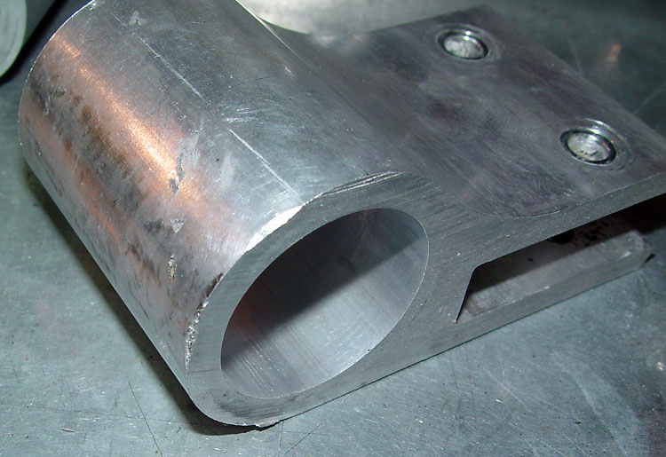

|
This page details the
modifications to the leaf springs on my truck. My
design goals
=======
|
Leaf Spring Modifications
|
|
This page details the
modifications to the leaf springs on my truck. My
design goals
>>>>>>> 0a87d2c6318913b1f3850d15f1568af011df4424
were (1) a high-compliance, comfortable ride, (2) minimal resistance
to movement, (3) minimum weight, and (4) minimum leaf twist.
I ordered the leafs from
<<<<<<< HEAD
=======
>>>>>>> 0a87d2c6318913b1f3850d15f1568af011df4424
Flex-A-Form in 235 lbs./in., the lightest spring rate that F-A-F
was comfortable providing. I will add rate with the helper
airbags. Note that in practice, F-A-F states that their
ratings should be reduced by about 20% to compare with steel.
if this is accurate, then a 235 lb. spring comes very close to the
stock 180 lb. rate.
I ordered the springs with the eyes reversed for 1" more drop.
On the rear, I installed
modified spring sliders both to provide smoother spring travel, and to allow
for easy ride height adjustment (the sliders can have spacers
underneath to raise ride height).
On the front, I installed
modified
<<<<<<< HEAD
=======
>>>>>>> 0a87d2c6318913b1f3850d15f1568af011df4424
Deaver Spring Baja Bushings. These allow the leaf to
articulate without twisting, and help to prevent static twist.
With no interleaf friction, and both ends of the springs riding on
bearings, this is the most friction-free leaf spring system
possible.
|
|
Flex-A-Form
rework:
|
|
My Flex-A-Forms came in rough
shape. I understand that many do not care what suspension
components look like, but these are expensive custom parts, and I
expected a better build quality and finish.
The fiberglass was not smooth before they were painted,
and the paint was beat up.
<<<<<<< HEAD
|
|
The eyes were also beat up,
=======
|
|
The eyes were also beat up,
>>>>>>> 0a87d2c6318913b1f3850d15f1568af011df4424
some of which was from shipping (the leafs are not separated from
each other in the box), and some of which had to have happened
before they were put in the box.
<<<<<<< HEAD
 |
|
=======
|
|
>>>>>>> 0a87d2c6318913b1f3850d15f1568af011df4424
The two bolts that hold on the eyes are
small, cheesy, about 1/4" too long, and not cleaned of adhesive
before the nuts were applied (maybe this is a makeshift Loctite, but
I still would have cleaned the excess off of the threaded stubs. |
<<<<<<< HEAD
|
=======
|
|
>>>>>>> 0a87d2c6318913b1f3850d15f1568af011df4424
The bolts are installed
without washers, and are torqued down so hard that they dug into the
aluminum (which is some sort of super-soft alloy). The
adhesive used is Liquid Nails.
<<<<<<< HEAD
|
|
=======
|
|
>>>>>>> 0a87d2c6318913b1f3850d15f1568af011df4424
The
center pins are skinny bolts, with the "pin" being a the bolt head
with the edges ground off. Note that F-A-F paints the white smooth-faced nylon that they
use for the mounting gaskets. There is about zero possibility
of that paint sticking. In this photo, I scratched it off
with my fingernail.
The only good thing
that I can say about the build quality is that the two springs are
identical, except for varying thickness at the ends where the eyes
slip over. I have heard that F-A-F makes the leafs as
one unit, then cuts the unit in half. I could not verify this
from a visual inspection.
|
|
Since I can't abide with things
that look poorly engineered, I had to rework them from stem to
stern. I removed the eyes by heating the eye with a heat gun
until the eye was just too hot to touch, then slipping the end in a vise
and twisting to release the Liquid
Nails. The eyes came off effortlessly.
I then stripped the leafs
of paint, and spent several hours smoothing them down. I
then sprayed them with many thick coats of epoxy.
<<<<<<< HEAD
As long
=======
As long
>>>>>>> 0a87d2c6318913b1f3850d15f1568af011df4424
as they were off, I sanded and buffed the eyes. The eyes are
shown here with the front pivots and rear slider bushings installed
(more on that below).
All of the hardware was
replaced. I bored out the eye mounting holes from the supplied 5/16" to
3/8". Note that the fiberglass can't be drilled with a
standard bit -- it will grab and crack the fiberglass. A
Unibit worked great. I used 3/8-16 X 1.5" flange bolts, with flanged
locknuts.
I replaced the center
(axle locating) pins
with much larger bolts. Not because of strength, but to be
able to mount my airbags directly to the center pins (I could no
longer have them mounted on the leafs, as the steel airbag mounts would dig into
the fiberglass). I bored
out the holes and used 1/2"-13 X
2.5" allen head bolts. Those
without airbags will want something in the 2" range. The
hole on the axle
needs to be slightly bored out to accommodate the head of a
1/2"
allen bolt, and the head needs to be ground down just a tad (it's a
bit too high).
Note that with the eyes
flipped, the top of the eye may make contact with the edges of the
front hangers. Check the eyes for contact, and clearance the
<<<<<<< HEAD
hangers with a grinder if needed. |
|
sliders: |
|
=======
hangers with a grinder if needed.
|
|
sliders:
|
|
>>>>>>> 0a87d2c6318913b1f3850d15f1568af011df4424
Since
RUSlow stopped making sliders, I copied his design.
I used Capital Motorsports roller bearing sliders from Speedway
Motorsports. The rollers may rattle a little, but they just
seemed more substantial than the nylon-bearing sliders formerly used by
RUSlow.
|
|
Here is a comparison of
the bearing sliders from Afco (left) and CMS (right):
<<<<<<< HEAD
| |
Afco (left) |
CMS (right) |
| length |
6.0" |
6.3" |
| width |
3.2" |
3.5" |
| thickness |
.182" |
.176" |
| bearing (ID X OD X W) |
.505 X 1.124 X .372 |
.502 X 1.124 X .310 |
| inside space between sides |
|
3.137" |
| ride height (mounting surface to bearing
OD) |
1.0" |
1.2" |
| |
|
|
The Afco is beefier, but the CMS has
better mounting options, and is cadmium plated.
They both use a 1/2" grade 5 bolt.
=======
| |
Afco (left) |
CMS (right) |
| length |
6.0" |
6.3" |
| width |
3.2" |
3.5" |
| thickness |
.182" |
.176" |
| bearing (ID X OD X W) |
.505 X 1.124 X .372 |
.502 X 1.124 X .310 |
| inside space between sides |
|
3.137" |
| ride height (mounting surface to bearing OD)
|
1.0" |
1.2" |
| |
|
|
The Afco is beefier, but the CMS has
better mounting options, and is cadmium plated.
They both use a 1/2" grade 5 bolt.
>>>>>>> 0a87d2c6318913b1f3850d15f1568af011df4424
I upgraded to some "airframe" or
"An" bolts (AN8-45). I found a great deal on them at Aircraft
Spruce. If you want to use a full-size nut, you will need a
longer bolt. The only nuts that will fit these bolts are the
short AN nuts ("jam nuts" in AN parlance).
The AN bolts are considerably stronger (and way
more expensive) than Grade 8 bolts, but it's a small price for peace
of mind. AN bolts are specifically designed for maximum
strength in shear applications like this. Most importantly, SAE bolts are designed to be used in tension, and the shafts are
slightly undersized. An bolts are not undersized. A -8
AN bolt will fit within .0001 into the 1/2" bore of the bearings and
spacers, making a stronger assembly.
I also sourced wider bearings with a
higher load rating (1,000-1,500 lbs versus the supplied 501-1,000)
from McMaster Carr -- I essentially used the Afco bearings on the CMS
sliders.
|
|
For the slider mounts, I ordered the following pieces of
A36 hot rolled steel (precut) from onlinemetals.com:
(2) 9" x 8.5" X .25" (top plates)
(2) 9" x 4.25" X .1875" (side
plates)
(1) 6" X 6" X .25" (gusset stock)
The sliders and mounts weigh 21
lbs, and the stock hangers and shackles weigh 12 lbs, for a net weight
gain of 9 lbs. But this weight is worth it. The stock rear
hangers are stupid flexible. The slider plates are stiff as a
board. Note also that I could have saved a couple of pounds by
making the plates smaller, but I wanted to be able to provide for
adjustability for different leafs if further experimentation is needed
in the future.
<<<<<<< HEAD
|
|
The bed must be removed to
install the sliders. Then, you have to remove the rear hangers.
It's
=======
|
|
The bed must be removed to
install the sliders. Then, you have to remove the rear hangers.
It's
>>>>>>> 0a87d2c6318913b1f3850d15f1568af011df4424
best to drill the frame mounting
holes before the plates are welded. It would be difficult to
chuck these up on a drill press after they are welded. The
upper holes of the side plates are right up against the intersection
of the top plate. I
mocked them up with c-clamps, and used a sharpie to trace the holes
and mark the line of intersection between the plates.
Once removed, and the
holes drilled (with my trusty Unibit), I used magnetic triangles to
square everything up. The braces can then be cut. After
everything was cut and mocked up with the magnets, it was easy for
the welder to weld everything up without making any mistakes.
I just set the assemblies on the welding table and walked away.
I then mounted the sliders
to the frame to mark the locations for the sliders. It's
important to note that the leafs are not perfectly parallel to the frame,
so it's not possible to mount the sliders perfectly parallel to the
edge of the plates without inducing bind.
Using a framer's square held against the leafs, you trace the line
of the leafs onto the underside of the sliders.
Then hold the sliders
roughly in place, and mark for the first hole. The sliders should be
installed to where the springs are at about 1/3 of their travel at
rest. In other words, the rear spring eyes have 1/3 of the
slot to go forward on extension, and 2/3 of the slot to go backwards
on compression.
To minimize bind, and
ensure that the sliders are as parallel to the leafs as possible, the best
practice is to then mount the sliders to the leafs, and the one
hole, and put weight on the frame to force the leafs to compress.
Then check to make sure that the lines that you scribed before are
accurate, and drill the remaining holes. I used 1/2-13 flange
bolts and flanged locking nuts to mount the sliders to the frame.
Since I used Flex-A-Form
springs drilled for 1/2" bolts, they mated right up to the sliders. The
stock springs may need custom bushing work. Energy Suspension
and Prothane make just about every kind of bushing and sleeve you
can imagine. Also note that the F-A-F leafs are slightly
longer than the stock leafs, so the sliders must be a little further
back to keep with the 1/3-2/3 rule above.
For the Flex-A-Forms, I had to
rework the rear bushings if I wanted to use the aluminum bushings
supplied with the sliders. I bored out the bushings to 15/16"
(a snug fit for the aluminum pieces), and then used a small belt
sander to remove the flange portion of the bushings. Since the
F-A-F bushings do not fit snugly into the eyes, I smeared a coating
of black RTV in the bore, then inserted the bushings, then applied
pressure with a 4" c-clamp to swell the urethane into contact with
the inside of the bore, and left it overnight to dry. Seems to
<<<<<<< HEAD
be working okay. |
|
front pivots: |
|
=======
be working okay.
|
|
front pivots:
|
|
>>>>>>> 0a87d2c6318913b1f3850d15f1568af011df4424
The Deaver Baja Bushings
are just spherical bearings that slip into the front eyes.
They use a common 5/8 bore COM10 spherical bearing, sleeved down to
a 9/16" bolt.
They will
not work as supplied. The stock front eye bolts are 18mm
(.719"), but
the BBs take a 9/16" (.5625") bolts. I found some 9/16" ID X 3/4"
OD bronze bushings on eBay (the stems have to be trimmed way down to
fit). The front hanger holes have to be slightly bored out to
3/4".
I also bought some AN 9-42 bolts
(9/16-18 thread, 4.4" L shank).
As with the sliders above, they make for a nice, tight fit in the
spacers. The fit is so tight that I had to use fine sandpaper
to smooth the shaft of the bolts and the inside leading edge of the
<<<<<<< HEAD
sleeves. |
|
=======
sleeves.
|
|
>>>>>>> 0a87d2c6318913b1f3850d15f1568af011df4424
I also upgraded the spherical
bearings with Aurora Bearing PWB-10T bearings from HRP World. They are nearly
three times as strong as a standard COM10 bearing. In off-road
racing applications, the supplied bearings will pound out, sometimes over the
course of a single race. On the street, or in mild off-road
use, they will last much longer, maybe even the life of the truck.
But for $64, I figured it was worth it for the peace of mind, and
reducing what would certainly be a PITA maintenance item.
Note: to replace the bearings, you will need some very long circlip
pliers.
The
housings allow a little slop in the fit between the bearing and the
shell. I actually returned one because the bearing was
rotating in the shell, rather than the ball rotating in the bearing.
To help prevent further slop, I added some blue Loctite in the bore
before I drove in the new bearings (use just a little, or it will
get into the circlip groove).
Finally, the BBs are just a
hair too short for the F-A-F eyes, so the eyes have to be ground
down a little on the sides with a belt sander. The OD of the BBs
is
0.03" smaller than the ID of the Flex-A-Form eyes, so I epoxied them
in place by coating the inside of the eyes with JB Weld. The
only way to get them out now would be to heat the eyes to somewhere
near the JB Weld melting temperature of 600�.
|
|
spring mounting:
|
|
I noticed that my spring
plates were bent, which caused the u-bolts to bend.
<<<<<<< HEAD
I suppose that I had torqued them down too hard at some point.
After investing all of that time and treasure into the leafs, I
couldn't mount them up with crappy hardware. So I found some
nice 3/8" thick spring plates from
=======
I suppose that I had torqued them down too hard at some point.
After investing all of that time and treasure into the leafs, I
couldn't mount them up with crappy hardware. So I found some
nice 3/8" thick spring plates from
>>>>>>> 0a87d2c6318913b1f3850d15f1568af011df4424
Foothill Offroad (part # FO1791). These are ideal for
fiberglass leafs, as I found that the stock plates also create four
distinct pressure points on the leafs -- not a good thing for
fiberglass. The only downside is that they are about twice as
heavy as the stock plates.
Since these spring
plates are drilled oversize, I had some custom u-bolts made by
Deaver Spring. 9/16" OD x 7" long were the closest Deaver
could supply (stock is about 12mm). I mocked them up, then cut
them to size. To protect the bolts from rust, and minimize the
abrasion of the threads against the sides of the leafs, I covered
the bolts in 3/4" shrink wrap.
Also note that the center
hole needs to be enlarged slightly if you use 1/2" center pins.
The nut is just slightly larger than the ID of the center pin hole.
I sprayed the plates with
a black epoxy to prevent rust.
|
|
|
|
Rear suspension before
(Hotchkis leaves, 2" drop shackles; helper airbags and and panhard
<<<<<<< HEAD
bar removed; frame partially stripped):
Rear suspension mockup being
tested with high-tech methodology:

Finished product during final
assembly:
More photos of rear
suspension
here. |
home
=======
bar removed; frame partially stripped):
Rear suspension mockup being
tested with high-tech methodology:
Finished product during final
assembly:
More photos of rear
suspension
here.
|